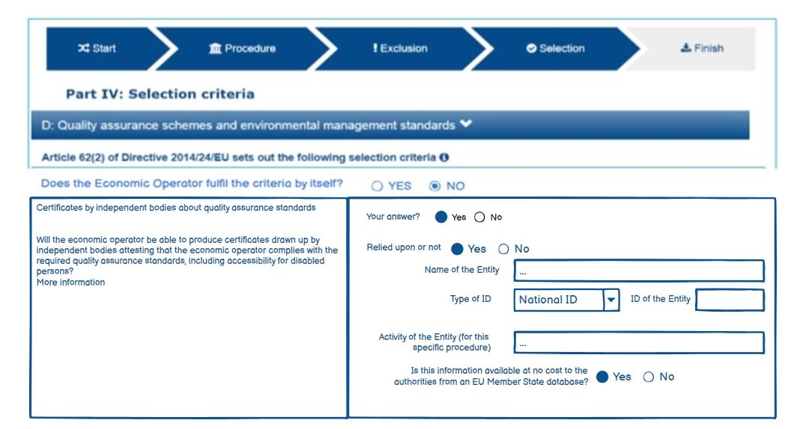

5.2 Initial question for the EO to fulfil or not the criteria
In ESPD-V3.0.0, a new data structure has been added to the selection criteria to get more information about the EO and the fulfilment of the selection criteria. The UUID identifying the group is 0e50931d-4d39-4f1d-9fdc-b2cf16c0807a. It is a common structured reused over selection criteria.
Data structure
The following image shows an example of how it represented in the spread-sheets (see ESPD-Criterion-V3.0.0)

Figure 92. ‘Does the EO fulfil the criteria by itself? Data structure and UUID.
Mockup

Figure 92. ‘Does the EO fulfil the criteria by itself? Mock up from the EO perspective.
The figure above is an example of how this information should be displayed. There, the Economic Operators must provide an answer to whether is going to fulfil the criteria by itself or relying on other entity.